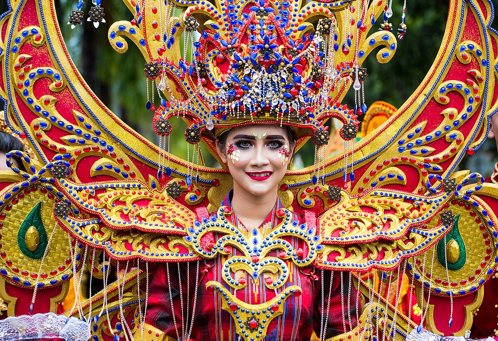
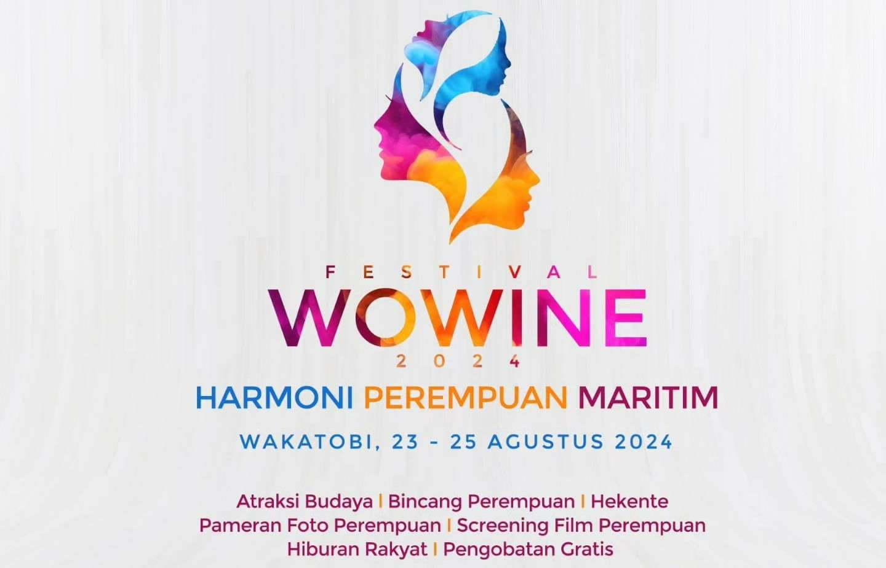

Jadwal Event Wisata Menarik Tahun 2025

Sultra Tenun Karnaval (STK)
Nikmati dan ikut serta dalam kegiatan tahunan pemerintah provinsi yang melibatkan para penenun dan desainer lokal.
Tanggal: 15 Maret 2024, 06:00 WITA
Selengkapnya
Wakatobi Wave
event budaya tahunan yang menampilkan keindahan kuliner dan budaya lokal.
Tanggal: 14 september 2024, 08:00 WITA
Selengkapnya

Festival Wowine
Nikmati kekayaan buadaya pada Festival desngan tema "Harmoni Perempuan Maritim".
Tanggal: 23-25 Agustus 2024, 10:00 WITA
SelengkapnyaDestinasi Wisata
Beberapa destinasi wisata yang bisa anda kunjungi di Kabupaten Wakatobi.